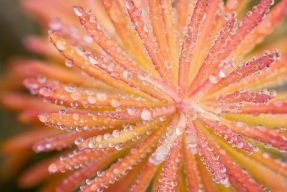
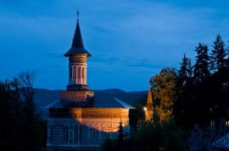

1) Care dintre cele doua imagini surprinde idea griului mediu?
2) Ce trebuie luat in vedere atunci cand vreti sa inregistrati in acelasi cadru si miscare si elemente statice? Timpii de expunere sa fie sub 1/30s Timpii de expunere sa fie foare lungi Este necesara folosirea unui terpied Este necesara modificarea profunzimii de camp din imagine
3) Ce componenta a aparatului de fotografiat controleaza miscarea redata in fotografie? Vizorul Diafragma Obturatorul Obiectivul
4) Care este rolul diafragmei? Diafragma este cea care regleaza luminozitatea si contrastul adaugand efecte speciale imaginilor Diafragma este cea care permite accesul luminii in aparatul foto Diafragma permite vizualizarea imaginii inainte de inregistrarea acesteia Diafragma este cea care controleaza profunzimea de camp in imagine
5) In ce an are loc deschiderea primei galerii de fotografie si unde? 1858,in Paris 1852,la Londra 1949,la Milano 1991,in Berlin
6) Cine a realizat prima fotografie aeriana, avand ca subiect Parisul? James Clerk Maxwell Henry Talbot Eastman Nadar
7) Care dintre urmatoarele doua fotografii este cea mai veche fotografie?
8) Ce dintre urmatoarele doua imagini este supraexpusa?
9) Care dintre urmatoarele aspecte reprezinta un avantaj al senzorului full frame? Obiectivele superangulare pierd din unghiul de cuprindere Lucrează cu valori ISO mai mari si are o gama de tonuri mai mare Teleobiectivele castiga datorita factorului de multiplicare Foloseste o gama de obiective dedicate
10) Ce face modul de expunere "P"? Programeaza un timer dupa care va fi facuta poza Modifica automat contrastul imaginii Alege singur valorile de expunere, diafragma si obturatorul Initiaza modul de fotografiere panoramic
11) Cate culori sunt necesare pentru formarea celorlalte? Sunt necesare 3 culori:rosu,galben si albastru Sunt necesare 3 culori:rosu,verde si albastru Sunt necesate doar nuante de alb si de negru Sunt necesare toate culorile curcubeului:rosu, portocaliu, galben, verde, albastru, indigo si violet
12) In care dintre cele doua imagini campul de claritate este mai mic?
13) Ce este o suprafata translucida? Orice suprafata care reflecta in totalitate lumina Orice suprafata care lasa lumina sa treaca prin ea O suprafata care nu permite trecerea luminii O suprafata stralucitoare
14) Care dintre cele doua imagini au culorile diametral opuse in roata, fiind complementare?  
15) Care este relatia pe care trebuie sa o aiba fotograful cu subiectul? Fotograful trebuie sa inteleaga trasaturile de caracter si felul de a se exprima a subiectului Fotograful trebuie sa limiteze libertatea de exprimare a subiectului Fotograful trebuie sa impuna criterii in functie de tema fotografiei realizate Fotograful nu ajunge sa cunoasca deloc subiectul
16) Cum este redata miscarea? ? Miscarea este redata cu ajutorul efectului de slow motion Miscarea este redata cu ajutorul timpului de expunere Miscarea este redata cu ajutorul tipului de lumina Miscarea este redata cu ajutorul valorii ISO
17) Prin ce se diferentiaza fotografia documentara de orice alt tip de fotografie? Fotografia documentara este o fotografie artistica Fotograful nu poate modifica decat unghiul si pozitia din care fotografiaza Efectele utilizate de catre fotograf trebuie limitate in fotografia documentara Nu exista diferenta intre cele doua tipuri de fotografie
18) Care dintre urmatoarele aspecte reprezinta un avantaj prin care este caracterizata lumina moale? Lipsa umbrelor si a profunzimii din cadru Cadrul nu are dimensiune si dinamism Evidentierea modelelor de pe suprafetele plate si redarea corecta a culorilor vii Obtinerea unei lumini plate, fara perspectiva
19) Cum este obtinuta lumina frontala? Se obtine in spatele subiectului Se obtine atunci cand fotograful se afla intre sursa de iluminare si subiect Se obtine prin inlaturarea surselor de lumina artificiala Se obtine prin modificarea valorii ISO
20) Ce exemplu de fenomen atmosferic este bine pus in evidenta de contralumina? Ceata Grindina Ploaia Fenomenele atmosferice nu fac posibila fotografierea in contralumina
21) Ce surprinde o fotografie documentara? Evenimente, oameni si a obiceiuri ale acestora, si a unei anume culturi sau civilizatii Marile migratii ale animalelor si ale pasarilor Efectele interventiei omului asupra mediului Calitatea vietii in unele tari
22)Care are dintre cele doua imagini stabileste o legatura directa cu privitorul?
23) Care este unitatea de masura a distantei focale? f/nr mm inch cd
24) In care dintre urmatoarele doua imagini se vede influenta pe care o are cultura asupra subiectului atunci cand acesta este fotografiat?
25) Cine a prezentat in anul 1991 primul aparat de fotografiat digital, disponibil publicului larg? Kodak Nikon Cannon Sony
26) Cine a reusit sa dezvolte fotografia instant? Edwin Lang Henry Talbot Louis Daguerre James Clerk Maxwell
27) Care este singura componenta a apratului de fotografiat prin care trebuie sa treaca lumina? Vizor Diafragma Obiectiv Obturator
28) Ce lucru trebuie avut in vedere atunci cand cumparam un aparat de fotografiat? Tipul de senzor Tara in care a fost realizat Dimensiunea ecranului LCD Functia Mirror lockup
29) Ce pozitie a luminii genereaza contraste mai puternice? Lumina din spate Lumina laterala
30) Care dintre cele doua este roata culorilor specifice artei?